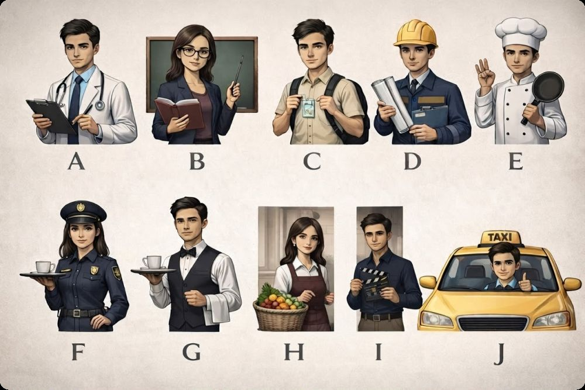
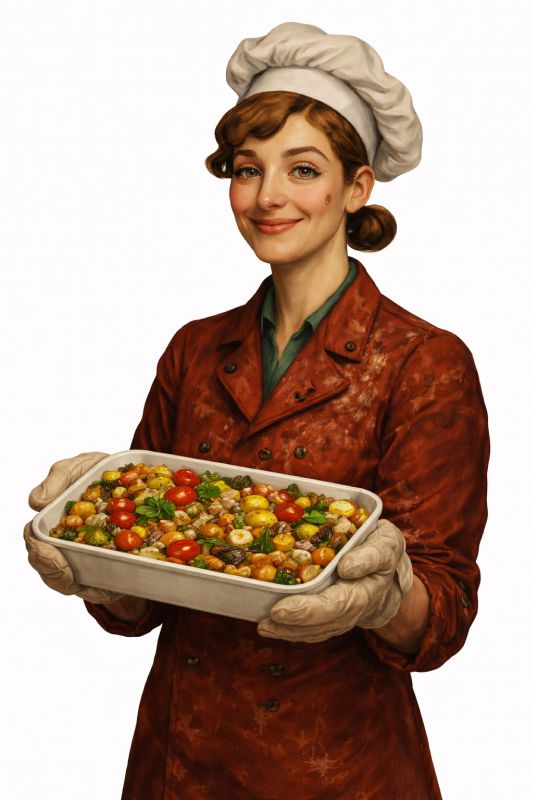
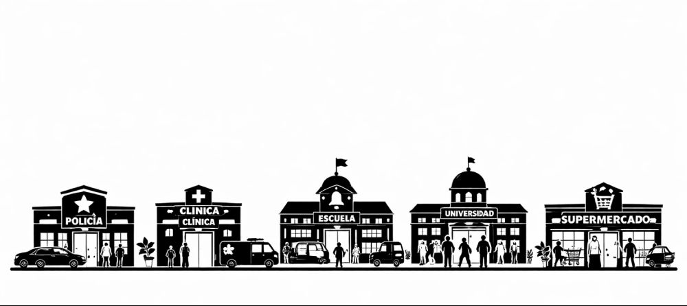
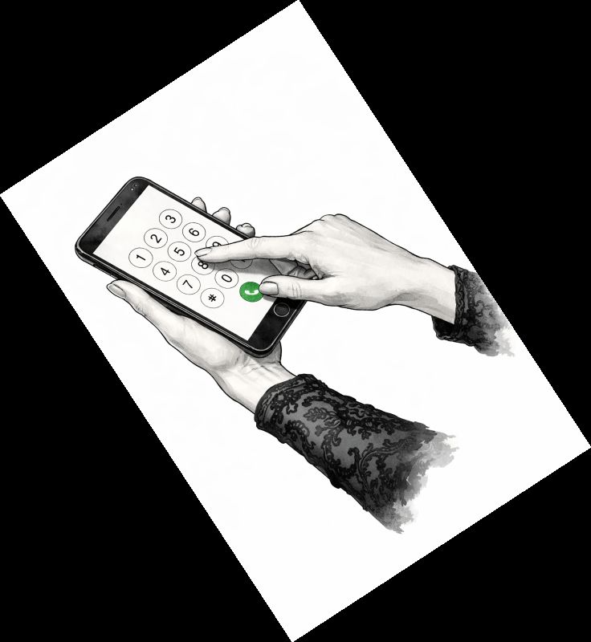
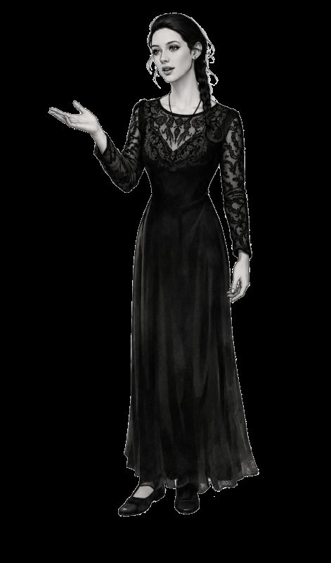
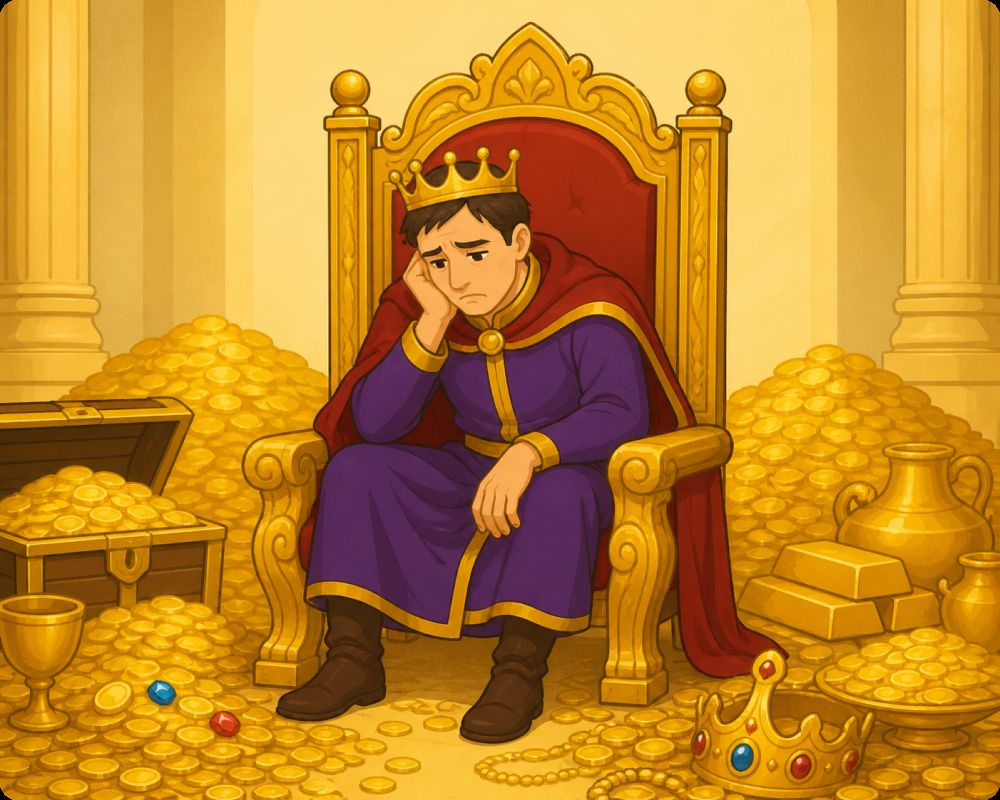
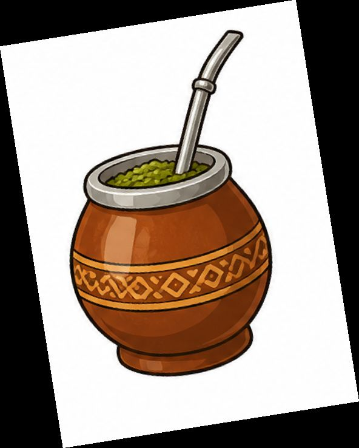
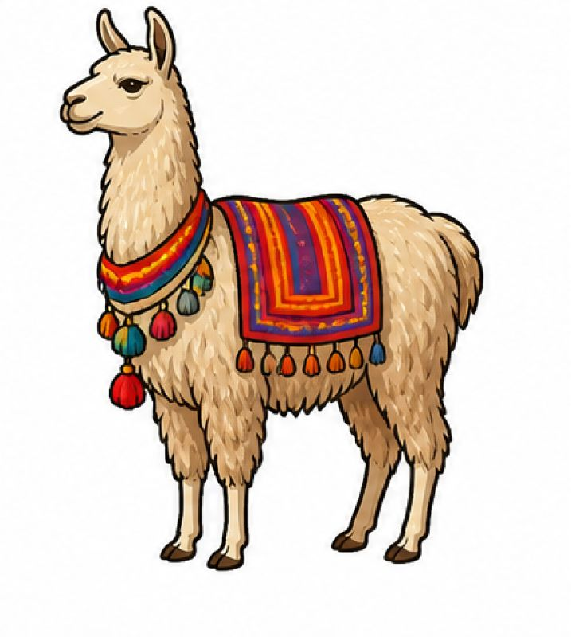
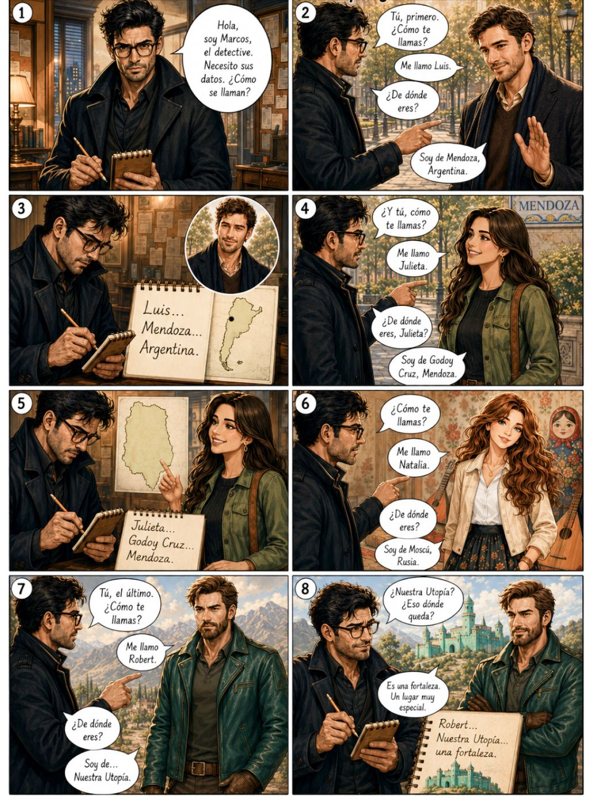

Aquella vez · Manual de español
Unidad 1
Saludos, profesiones y números
¿Qué tal?
En la plaza España
Luis¡Hola, Robert! ¿Cómo estás?
Robert¡Luis! Qué sorpresa. Muy bien, ¿y tú?
LuisBien, gracias. Mira, estoy con Natalia, ¿te acuerdas?
Natalia¡Robert! ¡Cuánto tiempo!
Robert¡Natalia! Claro que me acuerdo. ¿Cómo están?
NataliaTodo bien. Y ella es Julieta, una amiga.
JulietaMucho gusto, Robert.
RobertEncantado, Julieta.
LuisJulieta es estudiante de Historia.
JulietaSí, y tú, Robert, ¿a qué te dedicas?
RobertSoy ecologista. Cuido la naturaleza.
Luis¡Qué interesante!
NataliaY yo soy pintora, pero eso ya lo sabes.
RobertClaro, me acuerdo. Me alegro de verlos.
JulietaIgualmente.
NataliaIgualmente. Un placer.
EjercicioPreguntas
- ¿Cómo se llaman los amigos?
- ¿Quién es ecologista?
- ¿Quién estudia Historia?
- ¿Quién es artista?
El abecedario
ABCDEFGHIJKLMNÑOPQRSTUVWXYZ
A - a (como en casa)
B - be (como en boca)
C - ce (ante a, o, u = k; ante e, i = z/s)
D - de (suave entre vocales)
E - e (como en mesa)
F - efe (como en faro)
G - ge (ante a, o, u = g; ante e, i = j)
H - hache (muda, no suena)
I - i (como en vino)
J - jota (sonido gutural fuerte)
K - ka (solo extranjerismos: kilo)
L - ele (como en luna)
M - eme (como en mano)
N - ene (como en noche)
Ñ - eñe (como en niño, año)
O - o (como en sol)
P - pe (sin aspiración)
Q - cu (siempre con u muda: queso)
R - erre (suave: cara / fuerte: rojo, perro)
S - ese (siempre sorda: sapo)
T - te (sin aspiración)
U - u (como en luna)
V - uve (se pronuncia igual que B)
W - uve doble (como u o b)
X - equis (ks como en examen)
Y - ye (como yate o como i en rey)
Z - zeta (en España como TH; en Hispanoamérica como S)
El español en el mundo
El español es una lengua importante. Muchas personas hablan español. ¿Cuántas? Unos 500 millones de personas. Es la segunda lengua del mundo con más hablantes.
¿Dónde se habla español?
El español es la lengua oficial en 21 países.
También hay muchas personas que hablan español en Estados Unidos.
¿El español es igual en todos los países?
No, no es igual. Hay pequeñas diferencias. Por ejemplo:
En España se dice "coche".
En México se dice "carro".
En Argentina se dice "auto".
¿Por qué aprender español?
Aprender español es bueno por muchas razones:
1. Puedes viajar a muchos países y hablar con la gente.
2. Puedes escuchar música en español.
3. Puedes ver películas y series en español.
4. Puedes hacer amigos nuevos.
¿A qué te dedicas?
JulietaEntonces, ¿eres ecologista? ¿Cómo es eso?
RobertSí, soy ecologista. Mi trabajo es inventar soluciones para cuidar el medio ambiente. Por ejemplo, reciclar plástico, ahorrar agua y usar energía solar. ¿Y a ti? ¿Te gusta estudiar historia?
JulietaSí, me gusta mucho la historia, pero también trabajo. Soy niñera. Cuido niños.
RobertClaro. Me parece muy bien.
JulietaOye, Robert… ¿tienes novia?
RobertSí, tengo novia.
JulietaAhh, claro… (con decepción). ¿A qué se dedica?
RobertEs violonchelista. Toca el violonchelo en una orquesta. Y tú, Julieta… ¿tienes novio?
JulietaNo. ¡Estoy SOLTERA!
RobertAh, bueno. Pues no pasa nada. Estar soltera también está bien.
JulietaSí, claro… (suspira y sonríe un poco)
Ejercicio1. Lee las frases y escribe V (verdadero) o F (falso).
- Robert es profesor de historia.
- El trabajo de Robert es inventar soluciones para cuidar el medio ambiente.
- A Julieta no le gusta estudiar historia.
- Julieta es niñera. Cuida niños.
- Robert no tiene novia.
- La novia de Robert es violonchelista.
- Julieta tiene novio.
- Julieta dice que está soltera.
Leo las estrellas. Adivino el futuro. Consulto la alineación de los planetas.
¿Cuál es mi profesión?
Ejercicio2. Relaciona las profesiones con las ilustraciones

- Camarero / camarera
- Profesor / profesora
- Taxista
- Ingeniero / ingeniera
- Médico / médica
- Actor / actriz
- Cocinero / cocinera
- Estudiante
- Vendedor / vendedora
- Policía

Ejercicio3. ¿Dónde trabajan? Une cada profesión con el lugar donde trabaja.
Profesión
1. Médico
2. Profesor
3. Cocinero
4. Policía
5. Periodista
Lugar de trabajo
Escuela
Restaurante
Hospital
Comisaría
Redacción / Periódico
Ejercicio4. Elige la palabra correcta.
Mi mamá trabaja en un hospital. Ella es . (médico / profesora)
Mi papá trabaja en una escuela. Él es . (policía / profesor)
Juan trabaja en un restaurante. Él es . (cocinero / periodista)
Ana trabaja en una comisaría. Ella es . (médico / policía)
Luis trabaja en un periódico. Él es . (periodista / cocinero)
Ejercicio5. Pregunta y respuesta. Lee y responde con una frase completa.
Modelo: ¿Dónde trabaja el médico? ➜ Un médico trabaja en un hospital.
¿Dónde trabaja el profesor? ➜
¿Dónde trabaja el policía? ➜
¿Dónde trabaja el cocinero? ➜
¿Dónde trabaja la periodista? ➜
Reglas básicas (nivel A1)
Terminación -o → -a (médico → médica, cocinero → cocinera)
Terminación -or → -ora (profesor → profesora)
Terminación -ista → igual para masculino y femenino (periodista)
Policía es especial: la palabra no cambia, pero el artículo sí: el policía / la policía
Ejemplo de uso en frases
El médico trabaja en un hospital. / La médica trabaja en un hospital.
El profesor enseña en la escuela. / La profesora enseña en la escuela.
El cocinero prepara la comida. / La cocinera prepara la comida.
El policía ayuda a las personas. / La policía ayuda a las personas.
El periodista escribe noticias. / La periodista escribe noticias.

¿Me das tu número?

Números del 1 al 10
uno · dos · tres · cuatro · cinco · seis · siete · ocho · nueve · diez
Números del 11 al 20
once · doce · trece · catorce · quince · dieciséis · diecisiete · dieciocho · diecinueve · veinte
Los números y sus significados

Hola, yo soy Alicia. Soy numeróloga y astróloga. Los números tienen significados especiales. Te explico:
1 es una persona.
2 es una pareja.
3 es alegría.
4 es orden.
5 es aventura.
6 es familia.
7 es suerte.
8 es dinero.
9 es amistad.
10 es un nuevo comienzo.
Alicia sonríe y dice: —¡Los números están en todas partes!
Los números ordinales
Los números ordinales indican el orden o la posición de una persona o una cosa.
1.º primero / 1.ª primera · 2.º segundo / 2.ª segunda · 3.º tercero / 3.ª tercera · 4.º cuarto / 4.ª cuarta · 5.º quinto / 5.ª quinta · 6.º sexto / 6.ª sexta · 7.º séptimo / 7.ª séptima · 8.º octavo / 8.ª octava · 9.º noveno / 9.ª novena · 10.º décimo / 10.ª décima
Los ordinales cambian según el género:
— Luis vive en el segundo piso.
— Natalia vive en la tercera planta.
— Esta es mi primera clase de español.
— Marcos llega en quinto lugar.
Atención: delante de un sustantivo masculino singular, primero y tercero se convierten en primer y tercer: el primer día, el tercer piso.
EjercicioCompleta con los números correspondientes
En una semana hay días.
Una persona tiene nariz.
En un año hay meses.
Un huevo tiene minutos para cocerse.
Una araña tiene patas.
El ser humano tiene brazos.
Los días del fin de semana son (sábado y domingo).
Un gato tiene vidas (en la cultura popular).
Un dado tiene caras.
Lee los diálogos
MarcosHola, Julieta.
JulietaHola, Marcos.
MarcosSoy detective. Tengo un caso muy importante.
Julieta¿Un caso?
MarcosSí. Un ladrón. Se llama Luis.
Julieta¿Luis? Yo conozco a Luis.
MarcosNecesito ayuda. Responde mis preguntas, por favor.
JulietaDe acuerdo.
Marcos¿Cuántos años tiene Luis?
JulietaTreinta. (30)
Marcos¿Cuántos hermanos tiene?
JulietaTres. (3)
Marcos¿Tiene novia?
JulietaSí. Una novia. (1)
Marcos¿Dónde vive?
JulietaEn el apartamento número cinco. (5)
Marcos¿A qué hora sale de casa?
JulietaA las ocho. (8)
Marcos¿Cuántas llaves tiene?
JulietaCuatro. (4)
Marcos¿Cuántos teléfonos tiene?
JulietaDos. (2)
MarcosGracias, Julieta.
Julieta¿Y Luis es malo?
MarcosNo sé. Quizás sí.
Julieta¿Dónde está Luis?
MarcosNo lo sé.
JulietaAh, bueno...
MarcosAdiós, Julieta.
JulietaAdiós, Marcos. Suerte.
Julieta llama a Luis
Julieta¿Luis?
LuisSí, soy Luis.
JulietaHola, soy Julieta.
LuisHola, Julieta. ¿Qué pasa?
JulietaTengo una noticia.
Luis¿Qué noticia?
JulietaUn detective te busca.
Luis¿Un detective?
JulietaSí. Se llama Marcos.
Luis¿Y qué quiere?
JulietaNo sé. Pero te busca.
LuisAh, vale.
Julieta¿Sabes por qué?
LuisSí, es una tontería.
Julieta¿Una tontería?
LuisSí. No te preocupes.
Julieta¿Estás seguro?
LuisSí, tranquila.
JulietaVale. Entonces no digo nada.
LuisGracias, Julieta.
JulietaDe nada. Cuídate.
LuisTú también. Adiós.
JulietaAdiós.
Ejercicio3. Lee los diálogos otra vez. Escribe V (verdadero) o F (falso)
- Luis tiene treinta años.
- Luis tiene dos hermanos.
- Luis tiene una novia.
- Luis vive en el apartamento número cinco.
- Luis sale de casa a las nueve.
- Luis tiene cuatro llaves.
- Marcos es detective.
- Julieta llama a Luis.
- Marcos se llama Luis.
- Luis sabe por qué Marcos lo busca.
Gramática
1. Pronombres personales (sujeto)
Los pronombres personales sustituyen a la persona o cosa que hace la acción.
| Persona | Pronombre |
|---|---|
| 1.ª singular | yo |
| 2.ª singular | tú |
| 3.ª singular | él / ella / usted (Ud.) |
| 1.ª plural | nosotros / nosotras |
| 2.ª plural | vosotros / vosotras (España) |
| 3.ª plural | ellos / ellas / ustedes (Uds.) |
En Hispanoamérica, "ustedes" se usa para plural (tú + él/ella). "Nosotras", "vosotras", "ellas" son femeninos.
Ejemplos: Yo soy Ana. · Tú tienes un libro. · Él es médico. · Nosotros somos amigos. · Ellas tienen dos perros.
2. Verbo SER
Indica identidad, nacionalidad, profesión, cualidades (cosas permanentes).
| Pronombre | SER |
|---|---|
| yo | soy |
| tú | eres |
| él / ella / usted | es |
| nosotros | somos |
| vosotros | sois |
| ellos / ellas / ustedes | son |
Ejemplos: Yo soy estudiante. · Tú eres español. · Ella es inteligente. · Nosotros somos altos. · Ellos son de México.
3. Verbo TENER
Indica posesión (tener = poseer) y también edad (tener años). A veces se usa para estados físicos (tener hambre, tener frío).
| Pronombre | TENER |
|---|---|
| yo | tengo |
| tú | tienes |
| él / ella / usted | tiene |
| nosotros | tenemos |
| vosotros | tenéis |
| ellos / ellas / ustedes | tienen |

Cultura
Símbolos de la cultura hispanohablante
1. La bandera de España
La bandera es roja y amarilla. Tiene un escudo en el centro. España tiene 17 comunidades autónomas. La paella y el flamenco son muy famosos.
2. La bandera de México
México tiene una bandera verde, blanca y roja. En el centro hay un águila. El águila come una serpiente. El tequila y el chile son símbolos de México.

3. El mate (Argentina y Uruguay)
El mate es una bebida. Se toma con una bombilla y una calabaza. Los amigos comparten el mate. Es un símbolo de amistad.

4. La llama (Perú, Bolivia, Ecuador)
La llama es un animal de los Andes. Tiene lana suave. Es un símbolo de la cultura andina.
EjercicioPreguntas
¿Cuál es tu símbolo favorito?
Yo prefiero la paella. ¿Y tú?
Ejercicio1. Verdadero (V) o falso (F)
- La bandera de España es roja y amarilla.
- La bandera de México tiene un águila.
- El mate es una bebida de Argentina.
- La llama vive en los Andes.
Historieta
